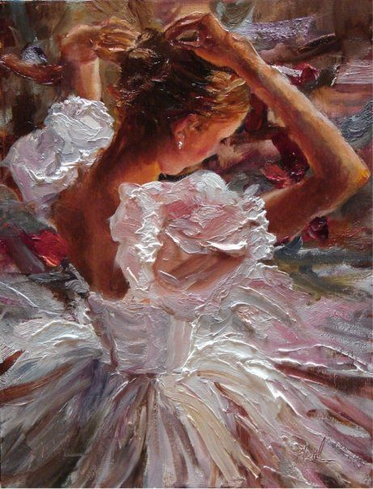
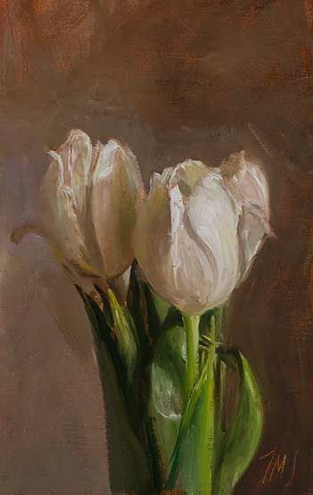
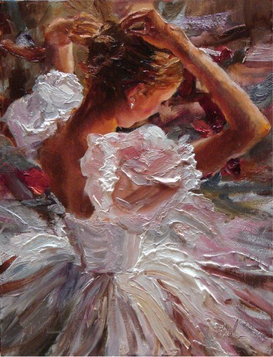
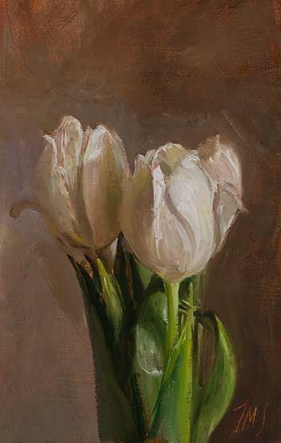
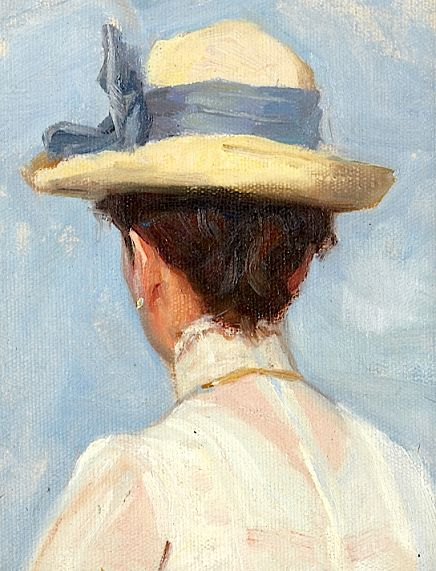
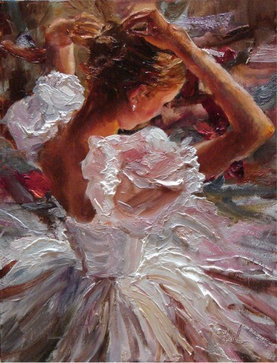
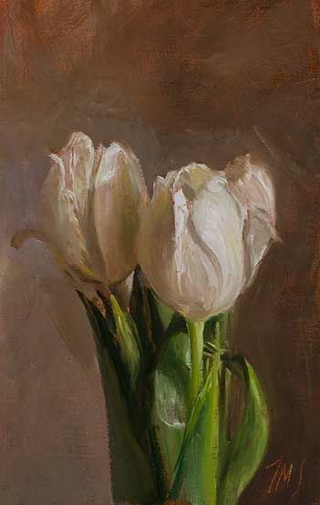

CARACTERISTICAS DEL OLEO: |
| Mezclas de colores: Por su consistencia, la pintura al óleo permite crear una amplia paleta de color. Partiendo de la combinación de los colores base obtendrás un resultado gran calidad. |
| Tiempo de secado: El aceite que utiliza como aglutinante, permite que la pintura tarde mucho en secar. Por ello, el tiempo de realización de los cuadros puede durar mucho tiempo. Esto te permite rectificar todas las veces que quieras y es una de las mayores diferencias con la pintura acrílica. |
| Acabado brillante: Otra de las grandes virtudes de la pintura al oleo es que su acabado es brillante. Estos colores tan vivos se conservan durante siglos, literalmente. Con unos controles mínimos de conservación, limpieza y restauración la pintura queda perfecta. Pase el tiempo que pase. |